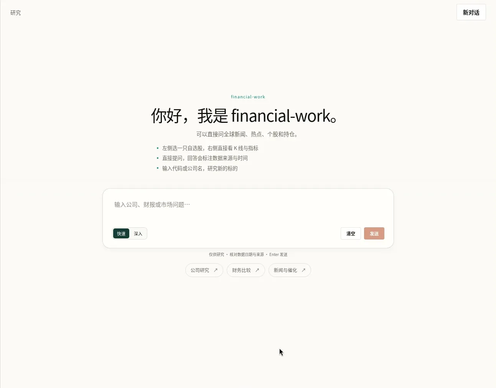
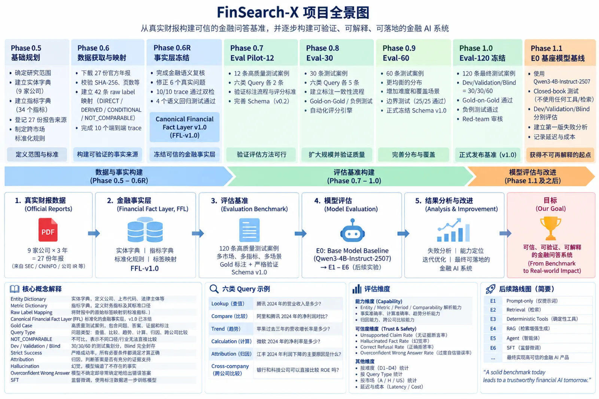

FinDesk — 每个数字都能点开原表核对的股票投研工作台
一个覆盖美股、港股和 A 股的线上股票研究工作台。平时用通用大模型读财报时，最麻烦的是它经常用很笃定的语气给出错数——答案两秒生成完，自己去翻几百页年报 PDF 核对却要十分钟。我把 FinDesk 做成了三栏结构：AI 只负责解释，所有算术交给后台代码，页面上出现的每个数字点一下就能对照原表和 K 线。在 120 道真实年报测试题里，无出处编造数字的比例从 26.67% 降到了 0。
- 我的角色
- 独立全栈（产品设计、120 题财报测试集、前后端开发到香港服务器部署）
- 覆盖市场
- A 股（同花顺实时行情与 5 年市盈率分位）· 港股（含腾讯控股等）· 美股（SEC 财报与行情）
- 验证题库
- 120 道真实年报测试题（覆盖 9 家上市公司、27 份年报，分为开发集、验证集与盲测集）
- 线上体验
- 公网 HTTPS 直连，免登录即可试玩 v4 公开研究笔记本与 v3 工作台
 点击放大
点击放大
用通用大模型看财报，生成只要两秒，核对要花十分钟。
我自己平时也看股票、翻财报。市面上不少 AI 投研工具能很快吐出几段像模像样的分析，但真拿到投资决策里参考时，第一关就卡在信任上。为了确认里面一句「营收同比增长 18.4%」到底对不对，你得切去行情软件、找回当年年报 PDF、核对是不是最新一期，以及有没有把单季度和全年混到一起。如果核对耗时比自己直接查表还长，工具就只是个摆设。
报告期与币种混算
模型经常拿今年全年营收去跟去年前三季度对比，或者在比较港股、美股时把人民币、港币和美元直接放在一起算。
四分之一回答含未授权数字
早期无约束测试里，有 26.67% 的回答会凭记忆写出原表里找不到的数字，或者自己心算一个错误的增长率。
聊天窗口看不到出处
单栏对话框只给文本结论，想验证某个数字来自财报哪一张表、对应哪天股价，还要切出去开几个软件翻找。
在金融系统里做了这么多年，宁可系统明确告诉我某条数据暂时没接进来，也不希望它用很顺畅的术语给出一个算错的数。 给 FinDesk 定的第一原则：先压低用户的核对成本
立项时给自己定了三个可验证的目标：在真实财报测试集上把无出处编造数字压到 0%；把简单查价查数请求分流出去，减半大模型调用和响应延迟；做成一个点开网页就能同屏对照原表和 K 线的线上工作台。
开发集 30 题错 27 题，翻日志发现六成以上出在底表解析。
很多人看到模型答错财报数字，第一反应是改提示词或者微调一个金融小模型。为了避免凭感觉调参，我先建了一套测试题库（也就是底层的评测引擎 FinSearch-X）：挑了美股、港股、A 股 9 家代表性上市公司的 27 份真实年报，设计了 120 道覆盖查数、同比计算、跨期对比和缺数据拒答的题目，严格拆成平时调参的开发集（Dev）、交叉验证集（Val）和封存盲测集（Blind）。
第一轮跑开发集时，30 道题错了 27 道，全对率只有 6.67%。把这 27 道错题的调用日志一条条翻开看之后，才看清真正的问题在哪里。
财报数字答错，主要是模型推理能力不够吗？
- 常规猜想 · Prompt 约束不够或模型太小如果顺着这个方向堆几千字提示词，给进去的底表数据本身就是错的，算出来一样不对。
- 日志结论 · 27 道错题里有 17 道（63%）是表格解析和单位换算错误 ✓大多数错误是因为解析年报表格时把「百万元」和「千元」搞混，或者把母公司报表与合并报表的同名科目串行了。
调整方向：底表结构化数据没洗干净前，调提示词只是掩盖问题。先停掉生成调优，回去重洗财报结构化数据目录。
用 Qwen3-4B 跑了 2,000 条财报问答微调后，到底要不要上生产？
- 同分布测试 · 合成测试题从 75.5% 升到 100%在和训练集同分布的合成题上，微调模型学得很快，输出格式也很工整。
- 真实考卷 · 放到 60 道真实跨公司题上，总成功率没有提升 ✓换到没见过的新公司年报附注时，微调过的模型依然查不对科目，只是用更像金融研报的句式把错数写出来。
决策结果：投研问答卡在「数据查得准不准、算术是不是代码算」，不在回答腔调。看到真实考题不涨分后，直接停掉微调路线，省下后续维护训练管线的成本。
计算归代码，解释归模型，原表放在右手边。
找到根因后，我把 FinDesk 拆成了前置分流、代码计算护栏和三栏核对界面三个部分。
怎么从机制上防止大模型自己心算和补数？
- 软约束 · 在提示词里叮嘱「不要编造数字」遇到跨期同比或毛利率差值时，模型还是容易自己心算一个数写进去。
- 硬护栏 · 剥离全部算术 + 绑定出处 ID + 缺数直接报白 ✓所有加减乘除、同比环比和市盈率分位由后台 Python 代码算好再交给模型；输出的每个数字必须带上数据源 ID；后置代码校验一旦扫到没有挂出处的数字就拦截重写。
实际效果：测试集里无出处数字从 26.67% 降到 0%。遇到上游接口没返回的情况（比如同花顺接口查港股历史市盈率返回空序列），页面直接提示数据暂缺。
「腾讯今天股价多少」「茅台去年营收多少」这类简单查数，要不要每次都走大模型？
- 全走 Agent · 所有请求都进大模型推理循环实现省事，但简单查个数也要等三四秒，浪费大约一半调用量。
- 前置分流 · 简单直查走行情和数据库接口，复杂对比才叫大模型 ✓在最前面加一层轻量路由，查实时价、查单一财务科目直接走接口秒回；跨期归因和多源综合才唤醒模型。
实际效果：省掉约 50% 大模型调用，平均响应耗时从 3.36 秒 降到 2.36 秒，准确率没有损失。
怎么把核对成本压到最低？
- 单栏对话 + 句尾外链点开链接还是要跳去新标签页翻长文档，看两眼很容易忘了刚才在聊哪一期。
- 三栏同屏 · 左边范围 | 中间对话 | 右边原表与图表 ✓左边固定当前研究标的与财报期，防止聊串公司；中间回答里的数字可点击；点击后右边直接定位到对应财务三表明细、估值分位或 20 日 K 线。

点击放大从离线评测脚本，分四步做到现在的公开研究笔记本。
一个人业余开发全栈产品，最怕战线拉得太长半途烂尾，或者只在本地能跑、放到公网上动不动挂掉。推进时每一代只解当前最卡的一个问题。
-
第一阶段 · FinSearch-X 评测底座
先跑通 120 题测试集和消融实验，不动前端界面
先洗出 9 家公司 27 份年报，用单变量对照实验验证了重洗数据、代码计算、回答护栏和前置分流四步改造各自的收益，同时通过对照实验停掉了无效的 2,000 条微调。
-
第二阶段 · v1 与 v2 拆分入口
把看行情和问问题拆开，解决首屏 8 秒白屏
第一版把行情看板和对话塞在一个页面里，拉取美股、港股、A 股多源数据时首屏常卡 8 秒白屏。v2 拆成「Work 看图表」和「Bot 问问题」两个轻量入口，行情秒出，复杂财报取证通过流式步骤推送。
-
第三阶段 · v3 固化工作台与离线快照
外部免费财经接口偶尔超时，保证线上体验不挂
免费第三方行情接口在高峰期偶发限流或超时。v3 在接通实时数据之外，内置了腾讯控股（00700.HK）等代表标的的完整快照兜底，接口抖动时核对原表和 K 线的核心交互依然可用。
-
第四阶段 · v4 公开研究笔记本（最新）
不再限制固定股票库，随手丢网页链接和 PDF 就能建笔记本
看公司除了年报，还要看新闻、访谈和行业研报。v4 改成了「资料来源 | 对话问答 | 成果 Studio」三栏：支持贴网页、传 PDF 或联网搜资料，勾选哪几份就只基于那几份回答，还能直接生成研究简报、对比表和思维导图。

点击放大可以先试第一个 v4 公开研究笔记本，也可以点下面 v3 的几个独立入口对比。
Notebook 公开研究笔记本
「资料来源 | 对话问答 | 报告生成」三栏同屏：贴网页、传 PDF 或联网检索，点引用高亮原文，支持一键生成简报和导图。
单步消融实验都有记录，但跨公司科目对齐和港股历史 PE 还没完全补齐。
整个实验用 Qwen3-4B 这种 4B 参数小模型做底座，在「数字、单位、出处必须全对」的标准下跑过一轮单步对照。哪怕模型很小，只要底表干净、算术交给代码、规则卡死，结果就会明显往上走。
| 改造步骤 | 测试集范围 | 数据变化 | 对应结论 |
|---|---|---|---|
| 1. 排查 27 道错题并重洗年报底表 | 开发集 30 道真实财报题 | 确认 17 / 27 题（63%） 是表格解析与单位换算错误 | 答不准先查数据源，调提示词掩盖不了脏数据 |
| 2. 算术剥离给代码 + 无出处拦截 | 120 题真实年报题库 | 无出处编造数字从 26.67% → 0% |
金融场景靠代码护栏兜底，不能依赖模型自觉 |
| 3. 前置简单查数分流（Query Router） | 同上测试集 | 大模型调用量 -50%，平均耗时 3.36s → 2.36s |
约一半日常问数无需进大模型，省算力也降延迟 |
| 4. 整套架构改造前后总对比 （Qwen3-4B「数字、单位、出处全对」严苛标准） |
120 题隔离考卷 | 开发集全对率（Qwen3-4B 小模型严苛全对口径）6.67% → 43.33%验证集全对率 6.67% → 13.33% |
小模型配合干净数据与工具护栏可以成倍提分，但泛化受限 |
| 5. 2,000 条微调（SFT）对照实验 | 同类合成题 vs 60 道真实跨公司题 | 合成题 75.5% → 100%，真实跨公司题没涨分 |
微调只学到了表面句式，没解决跨公司查表，停掉未上生产 |
做得对的地方
- 先建立并隔离 120 道真实年报测试题的开发、验证和盲测集再动手改产品，不然很容易被 2,000 条微调在合成题上的满分误导，多维护一套无用的训练流水线。
- 把翻 PDF 核对变成同屏点击，让底层可溯源变成前端看得到的操作。
目前的短板与下一步
- 跨公司非标科目名称对齐不够：Qwen3-4B 小模型严苛全对口径下开发集全对率到了
43.33%，换到没调过的验证集公司只剩13.33%。不同上市公司年报附注里同一个指标名字差很多（比如有的叫「履约成本」，有的拆在「营业成本明细」里），代码字典还没覆盖全。下一步要加上一层同义会计科目归并映射。 - 港股历史市盈率数据缺口：现有免费接口拉港股历史 PE 会返回空序列，页面现在会直接报缺失而不是硬算。后续打算用历史市值除以滚动净利润自己回算补上。
金融单据与理赔影像智能分流 →
公司生产已全量上线的项目：在尽量不漏掉一张带字收费单的前提下，把视觉大模型调用量压降约 25%。